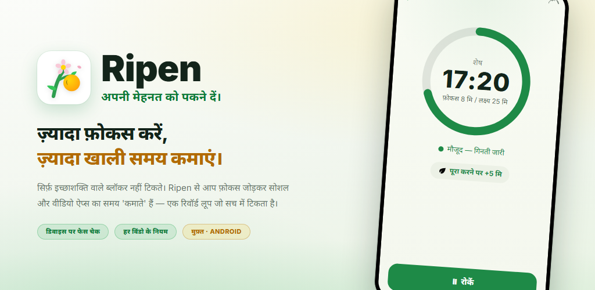
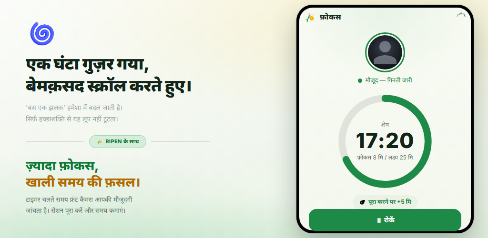
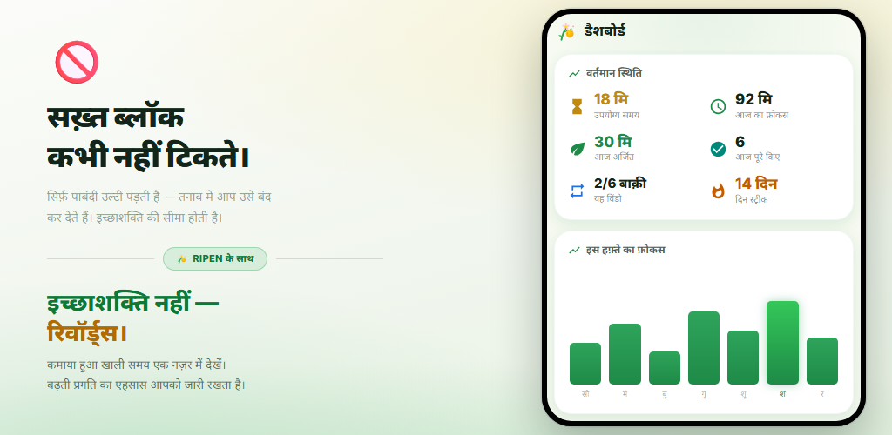
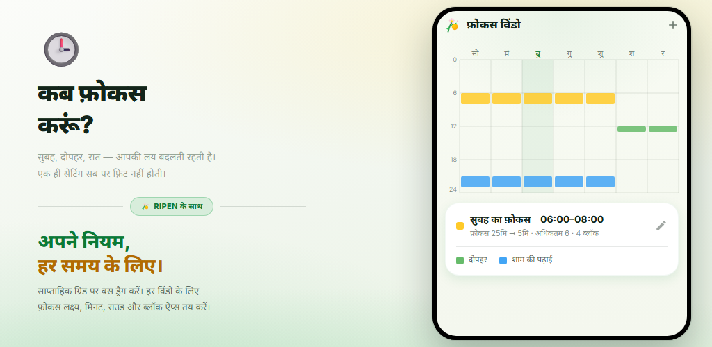
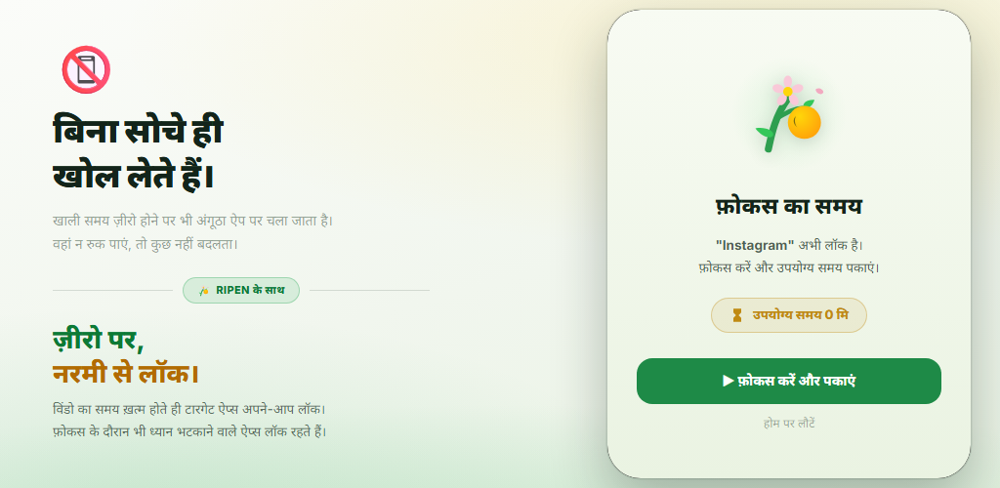
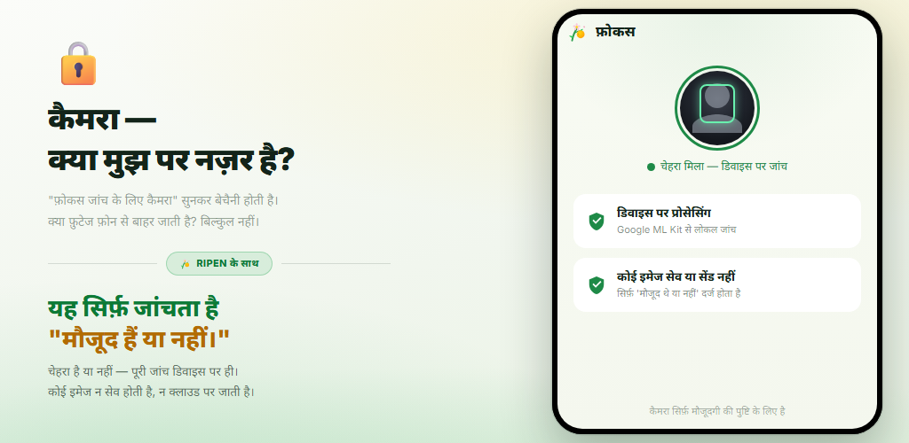

रिवॉर्ड लूप
हर बार फ़ोकस टाइमर पूरा करने पर सोशल और वीडियो ऐप्स के लिए समय कमाएँ। इच्छाशक्ति नहीं, रिवॉर्ड आपका व्यवहार बदलते हैं।
सिर्फ़ इच्छाशक्ति पर टिके ऐप ब्लॉकर ज़्यादा दिन नहीं चलते। Ripen एक रिवॉर्ड-आधारित आदत ऐप है: जितना ज़्यादा आप फ़ोकस और पढ़ाई करेंगे, सोशल और वीडियो ऐप्स के लिए उतना ही ज़्यादा समय “कमाएँगे”। कैमरे से उपस्थिति जाँच आपके डिवाइस पर ही होती है, और आप इसे हर समय-विंडो के लिए बंद भी कर सकते हैं।
Android 8.0+ · मुफ़्त · कोई विज्ञापन नहीं · अकाउंट की ज़रूरत नहीं

कोई जटिल सेटअप नहीं। आप बस तय करते हैं कि कब फ़ोकस करना है, कितनी देर, और बदले में कितना समय मिलेगा।
साप्ताहिक ग्रिड पर रंग भरकर फ़ोकस के दिन और घंटे चुनें
उपस्थिति जाँच चालू हो, तो टाइमर घटते समय फ्रंट कैमरा पुष्टि करता है कि आप मौजूद हैं
हर पूरा राउंड आपके तय किए मिनट दिलाता है (शब्द क्विज़ से भी)
0 मिनट बचने पर, आपके चुने ऐप्स नरमी से ब्लॉक हो जाते हैं
जिन विंडो में उपस्थिति जाँच चालू है, वहाँ फ़ोकस टाइमर तभी आगे बढ़ता है जब आपका चेहरा स्क्रीन के सामने हो। लक्ष्य पूरा करें और सोशल या वीडियो ऐप्स के लिए तय मिनट कमाएँ। बीच में छोड़े गए राउंड से कुछ नहीं मिलता।

उपयोग्य समय, आज का फ़ोकस, आज अर्जित और दिन स्ट्रीक एक नज़र में देखें। साप्ताहिक और मासिक ट्रेंड ग्राफ़ और घंटेवार हीटमैप बताते हैं कि आप कब सबसे अच्छा फ़ोकस करते हैं।

बस साप्ताहिक ग्रिड पर रंग भरकर फ़ोकस के दिन और घंटे तय करें। हर विंडो का अपना फ़ोकस लक्ष्य, प्रति राउंड मिनट, राउंड की सीमा, ब्लॉक किए ऐप्स और कैमरे से उपस्थिति जाँच होती है। विंडो के बाहर आप आज़ाद हैं।

किसी विंडो का समय ख़त्म होने के बाद, चुना हुआ ऐप खोलने पर ब्लॉक स्क्रीन दिखती है। फ़ोकस सेशन के दौरान भी ध्यान भटकाने वाले ऐप्स लॉक रहते हैं। “सेटिंग्स लॉक” बाद में नियम ढीले करने से रोकता है।

सिर्फ़ टाइमर हो, तो आपके उठकर चले जाने पर भी गिनती चलती रहती है। Ripen फ्रंट कैमरे से सिर्फ़ यह तय करता है कि स्क्रीन के सामने चेहरा है या नहीं — आपके डिवाइस पर ही। कोई इमेज सेव या भेजी नहीं जाती। आप बिना कैमरे वाली विंडो भी चुन सकते हैं।

देखें कि कैसे आप फ़ोकस करके समय कमाते हैं, और समय ख़त्म होने पर ऐप्स लॉक हो जाते हैं।
“छोड़ना चाहता हूँ, पर छूटता नहीं” को रिवॉर्ड से बदलें।
हर बार फ़ोकस टाइमर पूरा करने पर सोशल और वीडियो ऐप्स के लिए समय कमाएँ। इच्छाशक्ति नहीं, रिवॉर्ड आपका व्यवहार बदलते हैं।
फ्रंट कैमरा सिर्फ़ यह तय करता है कि आप स्क्रीन के सामने हैं या नहीं। प्रोसेसिंग आपके डिवाइस पर होती है और कोई इमेज सेव या भेजी नहीं जाती। आप इसे हर विंडो के लिए बंद कर सकते हैं।
दिन और समय के हिसाब से कई विंडो सेट करें। हर विंडो का अपना फ़ोकस लक्ष्य, मिनट, राउंड की सीमा और ब्लॉक किए ऐप्स होते हैं।
अंग्रेज़ी शब्दों के क्विज़ (4 विकल्प) में तय संख्या में सही जवाब देकर एक राउंड कमाएँ। CEFR स्तर के अनुसार लगभग 10,000 शब्द, साथ में स्तर जाँच, रिव्यू सूची और आपके अपने डेक।
वे मिनट जिन्हें विंडो शुरू होते ही इस्तेमाल कर सकते हैं — फ़ोकस करने से पहले भी। ये आपके फ़ोकस रिवॉर्ड के ऊपर जुड़ते हैं।
एक प्रतिबद्धता फ़ीचर, जो ज़्यादा फ़ुर्सत पाने के लिए सेटिंग्स से छेड़छाड़ रोकता है। नियम ढीले करने वाले बदलावों के लिए अनलॉक शेड्यूल करके 1–30 दिन इंतज़ार करना पड़ता है।
फ़ोकस ट्रेंड, फ़ोकस कैलेंडर, पूरा करने की दर, आपके सबसे अच्छे फ़ोकस वाले घंटे और ब्लॉक किए ऐप्स के उपयोग के ट्रेंड — सब कुछ विज़ुअल रूप में।
ऐप खोले बिना, एक स्थायी सूचना उपयोग्य समय, अगली फ़ोकस विंडो और सेशन का बचा समय दिखाती है। पूरा होने पर आवाज़ और वाइब्रेशन होता है।
सिस्टम डिफ़ॉल्ट, लाइट या डार्क थीम चुनें। ऐप हिंदी, अंग्रेज़ी और जापानी समेत 12 भाषाओं में उपलब्ध है।
“फ़ोकस जाँचने के लिए कैमरा” सुनकर चिंता हो सकती है। Ripen को गोपनीयता को सबसे पहले रखकर डिज़ाइन किया गया है।
चेहरे की उपस्थिति की पहचान Google ML Kit से आपके डिवाइस पर ही होती है। वीडियो कभी किसी बाहरी सर्वर पर नहीं भेजा जाता।
यह सिर्फ़ तय करता है कि चेहरा है या नहीं। फ़ोटो और वीडियो कभी सेव या भेजे नहीं जाते। यह सिर्फ़ इतना दर्ज करता है कि आप कितने सेकंड मौजूद रहकर फ़ोकस में रहे।
फ़ोकस रिकॉर्ड और सेटिंग्स आपके डिवाइस पर संग्रहित होते हैं और कभी Ripen के सर्वर पर नहीं भेजे जाते। Android बैकअप चालू होने पर आपकी सेटिंग्स आपके Google खाते के बैकअप में शामिल होती हैं और दोबारा इंस्टॉल करने पर रीस्टोर हो जाती हैं।
न साइन-अप, न लॉगिन, और अंदर कोई विज्ञापन या एनालिटिक्स टूल नहीं। डाउनलोड करें और तुरंत शुरू करें।
Google Play से डाउनलोड करें